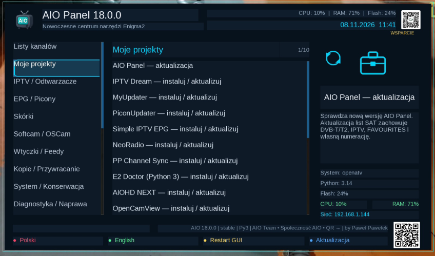

AIO TEAM · KATALOG PROJEKTÓW
Projekty AIO
Autorskie wtyczki, skórki, narzędzia na Android i Windows oraz listy AIO Team. Wybierz platformę i zobacz aktualną wersję. Systemy Multi-Click znajdziesz w osobnym dziale — ich autorem nie jest AIO Team.
Wszystkie pliki i systemyNOWE WYDANIE · 07.11.2026 · Enigma2
AIO Panel 18.0.0
Aktualizacja list satelitarnych z zachowaniem FAVOURITES, DVB-T/T2, DVB-C, IPTV i własnych bukietów. Instalacja kilku list obok siebie, nowa zakładka „Moje projekty”, OSCam Levi45 11968.

Wczytuję katalog projektów…